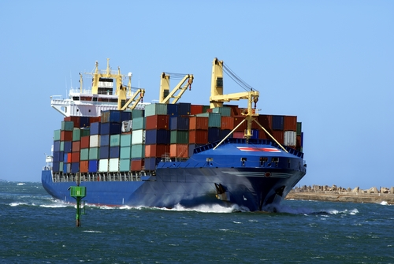

Тел/факс: (048) 737-75-071
Email: management@ralogistic.com.ua
Украина, 65029, г. Одесса, ул. Новосельского, 32, оф. 504


Для перевозки грузов разных габаритов традиционно используют железнодорожный транспорт, но в целом ряде случаев более целесообразно использовать и другие виды транспорта. Так грузоперевозки международные часто осуществляются автотранспортом и по морю. Если речь идет о доставке груза в другие страны, находящиеся на другом континенте, то использовать жд транспорт или автомобили невозможно, поскольку море они не переплывут. А услуги грузовой авиации обычно стоят дорого, поэтому самым оптимальным способом доставки грузов будут грузоперевозки морские с помощью современных грузовых кораблей, которые могут перевозить тысячи тонн самого разного груза.
Компания «РА Логистик» имеет богатый опыт работы в сфере грузоперевозок, как внутри нашей страны, так и за её пределами. Компания может похвастаться безукоризненной репутацией надежного партнера, поэтому нам доверяют даже большие международные компании. Специалисты компании обладают высокой квалификацией и большим опытом работы, поэтому разрабатывают наиболее оптимальный маршрут доставки грузов. Конечно, морские грузоперевозки не в состоянии доставить груз в внутрь страны, поэтому наши специалисты смогут организовать доставку грузов с порта в пункт доставки.
За время многолетней работы компании наши специалисты разработали наиболее выгодные для компании и клиентов маршруты и схемы доставок. Кроме этого, наши сотрудники отслеживают транспортировку груза на всём протяжении маршрута, поэтому в любое время смогут проинформировать клиента о месте нахождения его груза. Современные грузовые корабли перевозят огромное количество грузов, поэтому доставка по морю является выгодной для всех.
Любые международные перевозки, а тем более морские перевозки связаны с необходимостью оформления множества разрешающих и сопроводительных документов. На то, чтобы собрать все эти документы и правильно оформить у неподготовленных людей может уходить множество времени и сил. Наши специалисты на этом деле уже «съели собаку», поэтому в кротчайшие сроки оформляют все необходимые документы, подготовят груз к прохождению таможенного контроля. Наша компания предоставляет полный спектр услуг, начиная от загрузки груза, и заканчивая его выгрузкой и передаче адресату. Если Вам нужно доставить груз, наша компания сможет быстро и недорого доставить его любым удобным для Вас способом.